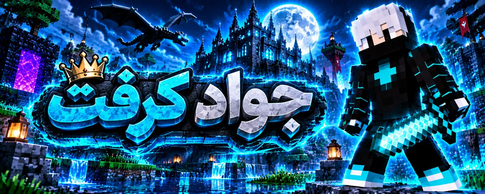
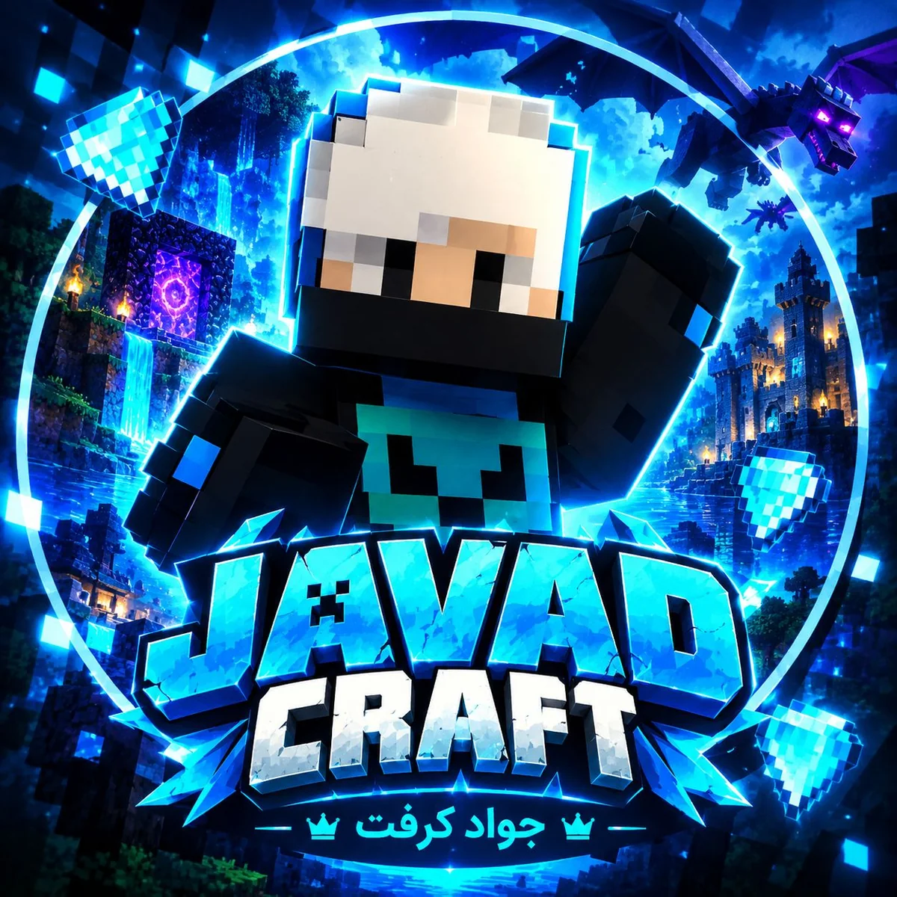

پاندای قهوهای
پاندای قهوهای یکی از رنگهای کمیاب پانداهاست و با ژنتیک پانداها ارتباط دارد.

اینجا دنیای ساختوسازهای خفن، دانستنیهای ماینکرفت و ماجراجوییهای بیپایانه. آمادهای؟

به دنیای من خوش اومدی! من عاشق ماینکرفت، دنیای کامپیوتر و ساختن چیزهای جدیدم. اینجا قراره دانستنیها، ایدهها و ماجراجوییهام رو باهات به اشتراک بذارم.
پاندای قهوهای یکی از رنگهای کمیاب پانداهاست و با ژنتیک پانداها ارتباط دارد.
کریپرها و فانتومها از گربهها و اوسلوتها فاصله میگیرند.
افسون Channeling هنگام طوفان و برخورد تریدنت به هدف، صاعقه ایجاد میکند.
قطبنمای معمولی به نقطه اسپاون جهان اشاره میکند، نه لزوماً محل تخت.
با ۵ قطعه Scute میتوان کلاهخود لاکپشتی ساخت.
آبِ قرارگرفته در دنیای ندر بهطور معمول فوراً تبخیر میشود.
اگر چند شب در بازی نخوابی، فانتومها ممکن است در آسمان ظاهر شوند.
بعضی زامبیها میتوانند به روستاییها حمله کنند و آنها را به زامبی روستایی تبدیل کنند.
سنگ بستر در حالت بقا با ابزارهای معمولی قابل شکستن نیست.
الماس از منابع ارزشمند برای ساخت ابزار و زره است.
اسلایمها هنگام شکست به اسلایمهای کوچکتر تقسیم میشوند؛ مگر کوچکترین اندازه.
زنبورها پس از نیش زدن، در نهایت میمیرند.
بطری عسل میتواند اثر مسمومیت را پاک کند.
قایق روی یخ آبی بسیار سریع حرکت میکند.
میتوان تا چهار شمع همرنگ را روی یک بلوک قرار داد.
اندرمنها وقتی بازیکن کدوتنبل حکاکیشده روی سر دارد، با نگاه مستقیم تحریک نمیشوند.
اگر در ندر روی تخت بخوابی، تخت منفجر میشود.
تخت در بُعد اند هم هنگام تلاش برای خوابیدن منفجر میشود.
درگاه ندر با قاب ابسیدین و روشن کردن داخل آن ساخته میشود.
برای فعالکردن درگاه اند باید چشم اندر را در جای خالی قابها قرار داد.
با شکست دادن اژدهای اندر، راه دسترسی به درگاه خروج باز میشود.
الیترا امکان سر خوردن و پرواز با کمک آتشبازی را فراهم میکند.
استفاده از راکت آتشبازی هنگام پرواز با الیترا سرعت را افزایش میدهد.
دید در شب باعث میشود محیطهای تاریک روشنتر دیده شوند.
نامرئیشدن زره و وسایلی را که دستت گرفتهای پنهان نمیکند.
اسفنج آب اطراف خود را جذب میکند.
اسفنج خیس را میتوان با خشککردن دوباره به اسفنج معمولی تبدیل کرد.
بامبو میتواند خیلی سریع رشد کند و برای داربست هم کاربرد دارد.
داربست با بامبو و نخ ساخته میشود و برای ساختوساز بلند مفید است.
روباهها ممکن است بعضی آیتمها را در دهان خود نگه دارند.
با استخوان میتوان گرگ را اهلی کرد.
گربههای اهلی ممکن است هنگام خواب بازیکن هدیهای کنار او بگذارند.
غذا دادن به دلفین میتواند او را به سمت سازهها یا گنجهای زیر آب راهنمایی کند.
ماهی بادکنکی در تماس نزدیک میتواند به بازیکن اثر سمی بدهد.
گلو اسکوئید هنگام آسیب دیدن جوهر درخشان آزاد میکند.
خفاشها موجودات تزئینی غیرفعالاند و آیتمی نمیاندازند.
قورباغهها میتوانند مکعبهای کوچک ماگما را بخورند و Froglight تولید کنند.
بزها گاهی به موجودات نزدیک خود ضربه میزنند.
دو بازیکن میتوانند همزمان روی یک شتر سوار شوند.
شترها میتوانند از روی کاکتوسها بدون آسیب عبور کنند.
لاماها را میتوان با فرش تزئین کرد.
سرعت و قدرت پرش اسبها در هر اسب میتواند متفاوت باشد.
برای هدایت خوک هنگام سواری به چوب ماهیگیری و هویج نیاز داری.
گوسفندهای طبیعی میتوانند پشم رنگی مختلفی داشته باشند.
نامگذاری گوسفند با نام خاص jeb_ باعث تغییر رنگ پشم آن میشود.
مرغها هر چند وقت یکبار تخم میگذارند.
کیک را روی زمین قرار میدهی و با کلیککردن از آن تکه میخوری.
نان با سه واحد گندم در یک ردیف افقی ساخته میشود.
هویج طلایی یکی از مواد مهم برای ساخت معجون دید در شب است.
سیب طلایی به بازیکن اثرهای مفیدی مثل جذب و بازسازی میدهد.
خوردن سیبزمینی سمی ممکن است اثر مسمومیت ایجاد کند.
با قلاب ماهیگیری علاوه بر ماهی، گاهی آیتمهای دیگری هم میتوان گرفت.
محتویات صندوق اندِر بین تمام صندوقهای اندِر همان بازیکن مشترک است.
صندوق شالکر پس از شکستن، محتویاتش را حفظ میکند.
از یک تنه چوب میتوان چهار تخته چوبی ساخت.
نردبان امکان بالا رفتن عمودی از دیوار را فراهم میکند.
درهای چوبی را میتوان با دست باز و بسته کرد.
دروازه حصاری برای عبور از حصار بدون شکستن آن کاربرد دارد.
شیشه معمولی با ابزار دارای Silk Touch بهتر جمعآوری میشود.
پشم با چهار نخ ساخته میشود.
میز ساختوساز شبکه ۳ در ۳ برای دستورهای ساخت فراهم میکند.
کوره برای ذوب سنگ معدن و پخت غذا استفاده میشود.
دودخانه غذا را سریعتر از کوره معمولی میپزد.
کوره ذوب سنگ معدن و ابزارهای فلزی را سریعتر ذوب میکند.
میز افسون برای استفاده از تجربه و لاجورد جهت افسونکردن ابزارهاست.
کتاب افسونشده را میتوان با سندان روی ابزار یا زره استفاده کرد.
سندان برای تعمیر، ترکیب و تغییر نام آیتمها کاربرد دارد.
افسون Looting میتواند مقدار بعضی آیتمهای افتاده از موجودات را افزایش دهد.
با Silk Touch میتوان بعضی بلوکها را به شکل خودشان برداشت.
افسون Efficiency سرعت شکستن بلوکها را افزایش میدهد.
افسون Unbreaking احتمال کمشدن دوام آیتم را کاهش میدهد.
افسون Mending از تجربه برای تعمیر آیتم استفاده میکند.
Aqua Affinity سرعت کندن بلوکها زیر آب را بهتر میکند.
Depth Strider سرعت حرکت در آب را افزایش میدهد.
Frost Walker هنگام راه رفتن روی آب، بلوکهای یخ موقت ایجاد میکند.
Infinity اجازه میدهد با داشتن یک تیر معمولی، کمان تیر نامحدود شلیک کند.
افسون Flame تیرهای کمان را آتشین میکند.
Punch موجودی را که تیر به آن برخورد میکند عقب میراند.
Sharpness آسیب شمشیر و تبر را در مبارزه افزایش میدهد.
سپر میتواند بسیاری از حملههای روبهرو را مسدود کند.
برای ساخت کمان به سه چوب و سه نخ نیاز است.
TNT با آتش یا ردستون فعال میشود و منفجر میگردد.
ردستون برای ساخت مدارها و ماشینهای خودکار استفاده میشود.
مشعل ردستون یک منبع سیگنال ردستون است.
زنگ روستا با ضربه یا سیگنال ردستون به صدا درمیآید.
بلوکهای شغلی میتوانند حرفه روستاییهای بیکار را تعیین کنند.
کتابدار میتواند کتابهای افسونشده معامله کند.
با افکت ضعف و سیب طلایی میتوان زامبی روستایی را درمان کرد.
معامله با روستاییها میتواند سطح حرفه آنها را افزایش دهد.
روستاییها هنگام خطر ممکن است برای پناه گرفتن به خانهها بروند.
نقشه محدودهای از جهان را نمایش میدهد و با کاوش کاملتر میشود.
با فعالکردن نمایش مختصات میتوان موقعیت X و Y و Z را دید.
نهال درخت با گذشت زمان و شرایط مناسب رشد میکند.
باران میتواند آتشهای معمولی روی زمین را خاموش کند.
در زیستبومهای سرد، بارش میتواند به شکل برف باشد.
کاکتوس به موجودات و بازیکنی که با آن تماس داشته باشند آسیب میزند.
قارچها در نور کم بهتر رشد میکنند و برای بعضی غذاها کاربرد دارند.
برای رشد گندم باید بذر را روی زمین کشاورزی بکاری.
کمپوستر از بعضی مواد گیاهی پودر استخوان تولید میکند.
پودر استخوان رشد بسیاری از گیاهان و محصولات کشاورزی را سریع میکند.
۱۰۰ دانستنی درباره موجودات، ابزارها، افسونها، ردستون، روستاییها و دنیای ماینکرفت. بعضی جزئیات ممکن است با نسخه یا Edition بازی تفاوت داشته باشند.
کانال آپارات جواد کرفت؛ بقیه لینکها را بعداً اضافه میکنیم.